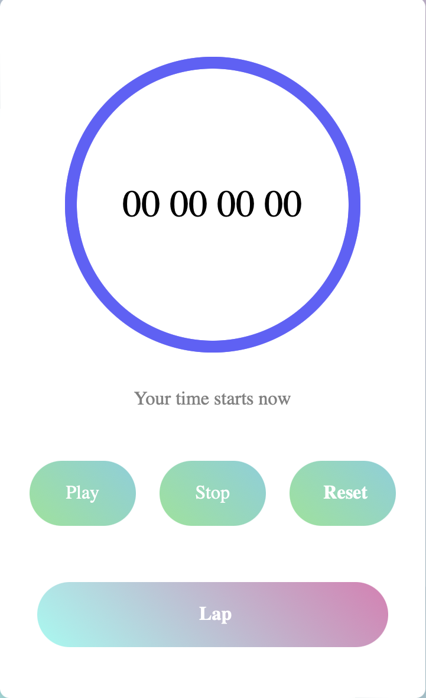

Projects

Stopwatch
The stopwatch project is a web application designed to monitor elapsed time. It offers features for starting, stopping, and resetting, as well as tracking laps.
Key features:
- Start/Stop Timer: Begin and halt the timer with a single button.
- Reset Timer: Reset the timer to zero.
- Lap Functionality: Record multiple lap times.
- Display: Show elapsed time in hours, minutes, seconds, and milliseconds.
Technologies used:
- HTML: For the basic structure of the application.
- CSS: For styling the stopwatch and making it visually appealing.
- JavaScript: For the functionality of the stopwatch, including time calculations and event handling.

Tic-Tac-Toe
The Tic-Tac-Toe project is a classic game implemented as a web application. It allows two players to take turns making spaces in a 3x3 grid.
Key features:
- Game Board: A 3x3 grid where players can place their marks.
- Player Turns: Alternating turns between two players.
- Win Condition: Detects when a player has won by aligning three marks in a row, column, or diagonal.
- Draw Condition: Identifies when the game ends in a draw if all places are filled without a winner.
- Reset Functionality: Allows restarting the game after a win or draw.
Technologies used:
- HTML: Provides the structure of the game board.
- CSS: Styles the game board and enhances user interface elements.
- JavaScript: Implements the game logic, including player turns and win/draw detection.

Weather App
The Weather App is a web-based application designed to provide users with real-time weather information for any given location.
Key features:
- Current Weather: Displays current temperature, humidity, and other weather conditions.
- Forecast: May include weather forecast for the coming days.
- Location Search: Allows users to search for weather information by entering a city or location.
- Weather Icons: Uses icons or images to represent different weather conditions (e.g., sunny, rainy, cloudy).
Technologies used:
- HTML: For the structure and styling of the app.
- CSS: For styling the user interface.
- JavaScript: Likely uses a weather API to get real-time weather data.